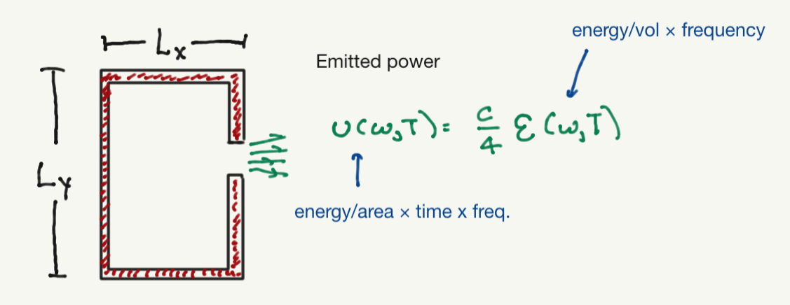

Introduction to quantum mechanics#
I will start with a quasi-historical, phenomenological discussion of some basic aspects of quantum mechanics:
The need for a new dimensionful quantity \(\hbar\) with units [Energy \(\times\) time].
The quantization of the energy of light with frequency \(\omega\) into parcels (“photons”) with energy \(\hbar \omega\),
The fact that quantum states can be written as complex vectors, and that the sum of two such vectors is another legitimate quantum state.
The probabilistic nature of the outcome of quantum measurements.
These are all important; point (3) motivates a serious survey/review of linear algebra, which is also needed to discuss (4) more precisely.
Blackbody radiation#
Consider a cavity with walls at some temperature \(T\), such that the electromagnetic field inside of the cavity is at equilibrium with the walls

What is the expected energy density inside the cavity? We could (following many textbooks) try to comute this from classical electromagnetism, but we will appeal to dimensional analysis.
The total energy denisty should be an integral over all allowed frequencies:
Assuming that the box is very large compared to the wavelengt of the light inside, and that we are asking aboput the energy density which should (for a large box) be independent ot the box size, We have the following dimensionful quantities:
The frequency \(\omega\).
The temperature writen as a thermal energy \(k_B T\).
The speed of light \(c\).
To get an energy density we can make an energy from \(k_B T\) and a length scale \(c/\omega\) (proportional to the wavelenngth). \(E(T,\omega)\) should have units of energy denisty per frequency. The only combination of the above yielding a quantity with the rigt dimensions is:
where \(A\) is a dimensionless constant that requires a first-principles calculation to obtain.
The total energy is thus
This is sometimes termed the “ultraviolet catastrophe”. Possible outs are (a) there is a maximum possible frequency for the electromagnetic field, or (b) we need to introduce some other dimensionful constant so that \(E(T,omega)\) becomes a function that falls off rapidly at large \(\omega\). Note that either requires some new dimensionful constant; the former requires at least a maximum frequency \(\Omega\).
We will describe a solution of the type (b), as this produces a spectrum which is in agreement with the data; this was Planck’s original goal. Plank’s guess ammounted to introducing a new fundamental constant \(\hbar\) with units [Energy \(\times\) time]. Thus, \(\hbar \omega\) is now an energy scale intronsic to the system.
Now consider an electromagnetic field with a given polarization and wave vector \({\vec k}\), such that \(\omega = 2\pi c |{\vec k}|\).